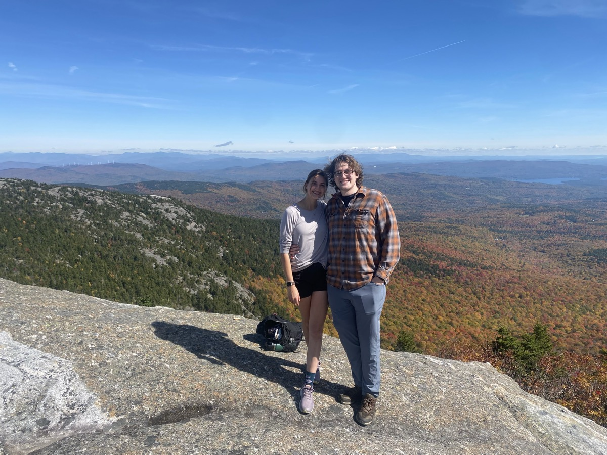

⚡ BREAKING: Bigfoot sighting reported upstate ⚡ Witnesses describe it as "6 foot 9, friendly, wearing glasses" ⚡ Officials confirm it was just Eli Larkin ⚡ Experts agree: honest mistake ⚡ Bigfoot could not be reached for comment ⚡
1UP ❤❤❤HI-SCORE 999999
ELI LARKIN
THE GAMER HAS ENTERED THE CHAT AN ABSOLUTE PHENOMENON. ASK ANYONE.
► PRESS START
📸 The Evidence
Wine connoisseur
not sure this is legal...
Ice castle inspector
eli against all odds
Nature enthusiast
mom it's not just a phase
big pokemon guy
crimson chin
Visibility: zero. Spirits: high.
this stares at you when you wake up
Passenger seat princess
Peace was always an option

eli + camille
🧠 Verified Eli Facts
He is a gamer.
He cannot be trusted with a Nerf sword.
He is 6 ft 9 in.
He teaches people to talk.
Everybody loves underbites, and Eli has one of the best in the game.
His best pal is a goofy vegan.
He is in love with Camille. We don't know what she sees in him.